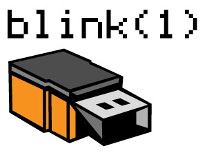

Introduction¶

The blink(1) is a tri-color USB LED visual aid, which has multi-language software support. It can produce any RGB color, which can then be enhanced in many different ways including variable pulse frequencies, different brightness levels and arbitrary patterns.
The challenge is to code something awesome using the blink(1), based on creativity, coolness, and usefulness.
This project utilizes the blink(1) to represent visually the current build state of the LCO software system.